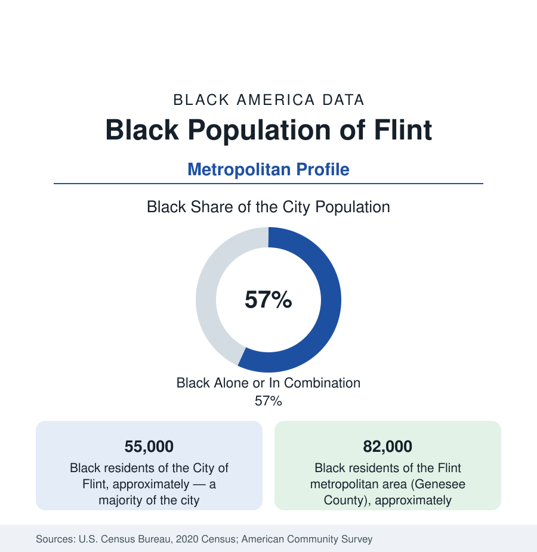

Black Cities
Black Flint: Vehicle City After the Water
Flint holds about 55,000 Black residents in the city and 82,000 across the metro — a majority-Black city whose name became a warning. The census profile.

Flint holds about 55,000 Black residents within the city — Black alone or in combination, a majority of its 81,000 people — and about 82,000 across Genesee County. Vehicle City built Buicks by the hundreds of thousands and a Black union middle class with them; then the plants went, the population halved, and in 2014 the state's emergency managers switched the city's water to a river that poisoned its children — the sequence by which Flint's name entered the language as a synonym for governmental betrayal, and the data by which its people are still counted.
The North Side, St. John, and the Plant Gates
The geography centers north: the North Side along Dupont and Pierson — St. John Street's historic corridor (the Black business and church district of the plant era, its blocks thinned by renewal and disinvestment), the Civic Park neighborhood (built for the first GM workers, its bungalows a National Register district), and the King and Hallwood corridors — with the South Side's Saginaw Street spine and the newer subdivisions toward Grand Blanc holding the dispersed middle class. The institutions run deep for a city this size: the churches of the north side (Vernon Chapel AME, Quinn Chapel, and the congregations that became the water crisis's distribution network), Mott Community College (the county's college, on the Court Street campus), Kettering University (the old GM institute), and the University of Michigan–Flint downtown — beside the Flint Institute of Arts and the Sloan Museum in the College Cultural Center, the cultural campus the Mott fortune built. Charles Stewart Mott's foundation (the community-school movement was born in Flint's schools under his funding in the 1930s) remains the city's anchor institution and a national philanthropy headquartered on Saginaw Street.
From Buick City to the Assistance Economy
The employment data are the steepest deindustrialization file in this section: from the GM constellation (Buick City, the AC Spark Plug and Fisher Body plants — some 80,000 GM jobs in the county at the 1970s peak by the standard counts) to a fraction of that today — the remaining truck plant and parts operations the remnant. The economy that replaced it runs on healthcare (Hurley Medical Center — the city's public teaching hospital, the water crisis's front line — McLaren and Ascension Genesys), education and the public sector, and the service tier. The indicators are Michigan's starkest: poverty rates that have led big-city tables, incomes at the state's floor, homeownership in the older neighborhoods at low prices that mock the plant-era wages — and the water file's numbers layered over everything: the lead service lines (replaced by the tens of thousands under the settlement's mandate, a completed-in-mostly infrastructure program), the Legionnaires' chapter, the children's blood-lead surveillance data, and the trust deficit the surveys measure in a population that was told its water was safe. The Flint Registry and the pediatric programs of Dr. Mona Hanna-Attisha's clinic (the whistleblowing research that proved the poisoning in 2015) are the standing institutions of the aftermath.
Sit-Down City's Ledger
Flint's place in labor history precedes its tragedies: the 1936–37 Sit-Down Strike at Fisher Body — the UAW's founding victory, won in plants where Black workers stood in the occupation's ranks — made this city the union movement's Plymouth Rock, and the Black autoworkers' subsequent generations (the Trade Union Leadership Council's fights inside the UAW included) built the middle class the plants later took with them. The movement file runs through the open-housing fights and the 1967 long hot summer's Flint chapter to the modern political data of a majority-Black city: its mayors (including, in the crisis years, the city's leadership through the state receiverships that culminated in the water switch — the emergency-manager chapter itself now the state's cautionary data), its council, and its county offices. Claressa Shields — the two-time Olympic boxing champion from these streets, the GWOAT of the women's game — is the modern cultural dateline, her Flint pride a stated creed.
Change and the Estimates
The estimates show the city's population stabilizing near its floor after the half-century slide, the county's suburbs (Grand Blanc, Fenton, Davison) holding the metro's growth, and the current files running through the water settlement's programs, the north side's land-bank and housing phases, the downtown and university district's slow rebuild — and the permanent question the crisis posed to every data series the city produces: whether the numbers describe a place being reinvested in, or a place being managed. The birth and school cohorts of the lead years are the series the whole country now watches with Flint.
Reading the Flint Numbers
Flint's 82,000 metro Black residents struck the sit-down that built the American middle class, drank water their government poisoned, organized the distribution lines that government failed to run, and stayed. No profile in this atlas carries a heavier ledger — or a clearer demonstration that the community, not the state, was the institution that held.
More in Black Cities
Black Atlanta: Population, Distribution, and Growth of a Black Metropolis
Metro Atlanta holds more than two million Black residents — roughly one in three, second only to New York. The suburban distribution, migration history, and composition of Black Atlanta in the census data.
Black New York: The Largest Black Population in America
The New York metropolitan area holds about 3.4 million Black residents — more than any metro in the nation — and the city itself about two million. The census profile.
Black Washington: The District and the Metro
The Washington metro holds about 1.6 million Black residents, and the District itself — long a majority-Black city — now records a Black share near 41 percent. The census profile.
Source: U.S. Census Bureau, 2020 Census; American Community Survey; Population Estimates Program.